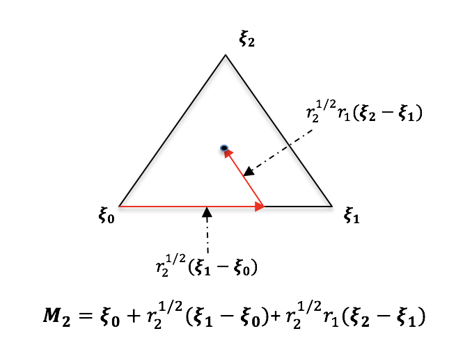

Simplex
The Simplex class generates uniformly distributed samples inside a simplex of dimension \(n_d\), whose coordinates are expressed by \(\zeta_k\). First, this class generates \(n_d\) independent uniform random variables on [0, 1], denoted \(r_q\), then maps them to the simplex as follows:
where \(M_{n_d}\) is an \(n_d\) dimensional array defining the coordinates of new sample. This mapping is illustrated below for a two-dimensional simplex.
{kind=link}
Additional details can be found in [21].
Simplex Class
The SimplexSampling class is imported using the following command:
>>> from UQpy.sampling.SimplexSampling import SimplexSampling
Methods
- class SimplexSampling(nodes=None, nsamples=None, random_state=None)[source]
Generate uniform random samples inside an n-dimensional simplex.
- Parameters:
nsamples (
int) – The number of samples to be generated inside the simplex. If nsamples is provided when the object is defined, therun()method will be called automatically. If nsamples is not provided when the object is defined, the user must invoke therun()method and specify nsamples.random_state (
Union[None,int,RandomState,Generator]) – Random seed used to initialize the pseudo-random number generator. Default isNone. If anintis provided, this sets the seed for an object ofnumpy.random.RandomState. Otherwise, the object itself can be passed directly.
- run(nsamples)[source]
Execute the random sampling in the
SimplexSamplingclass. Therun()method is the function that performs random sampling in theSimplexSamplingclass. If nsamples is provided called when theSimplexSamplingobject is defined, therun()method is automatically. The user may also call therun()method directly to generate samples. Therun()method of theSimplexSamplingclass can be invoked many times and each time the generated samples are appended to the existing samples.- Parameters:
nsamples (
int) – Number of samples to be generated inside the simplex. If therun()method is invoked multiple times, the newly generated samples will be appended to the existing samples.- Returns:
The
run()method has no returns, although it creates and/or appends thesamplesattribute of theSimplexSamplingclass.